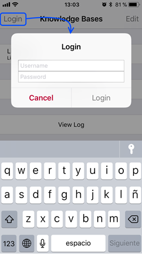
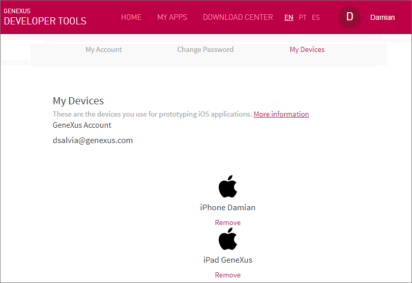
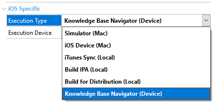
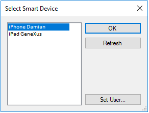

Warning: Some devices with
GeneXus Developer Account.
Ensure that the device is connected to the same network as the deployment machine (where GeneXus is installed).
Open the KBN on the device (for instance, an iPhone). If the KBN isn’t installed, download it from the Apple AppStore --- it only takes a few minutes, and it's free.
Click on the Login button and enter your GeneXus Developer Account credentials (username/password).
If you don’t have an account, create one and return to this step.

As soon as your account has been authenticated on the device, it should be registered in your profile.
In order to check if the device has been successfully added to your device list, login into your account at GeneXus Developer and click the on tab labeled as “My Devices”; the device(s) should be listed.

Open the Smart Devices generator properties. In the iOS Specific group (visible only when Generate iOS property is set to True), set the Execution Type property to Knowledge Base Navigator (Device).

In the Execution Device property:
- Click the three dots button of the property.
- Type in your GeneXus Account username and password.
- Click on the Refresh button.

Press F5 to prototype the application directly on the device. Every time that a KB from the KBN is selected, it will be automatically refreshed with the changes performed in GeneXus.
- The KBN version is old or it isn’t installed. Note that for effective prototyping the KBN version needs to be the corresponding to your GeneXus Version. You may need to maintain various KBN Versions installed, please check HowTo: Back up and Restore an iOS Application using iTunes
- The device isn't displayed in the list of devices of the generator’s Execution Device property.
Remember you must login to the KBN with the same GeneXus Developer Account user than in GeneXus IDE (option Tools > GeneXus Account...)
 Prototyping features and Deployment of applications for Smart Devices
Prototyping features and Deployment of applications for Smart Devices